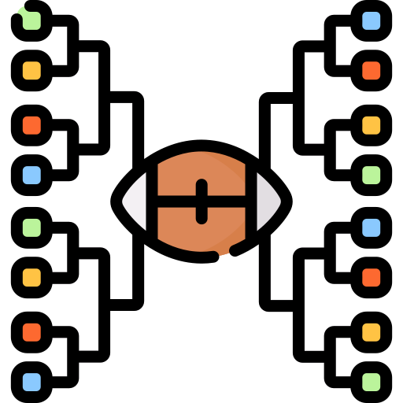

FBS Postseason Reform Overview
College football is a spectacle where fans of all ages have passion and fervor. Since the pioneering of college football in 1869, it has blossomed as a dedicated event across the United States. However, there have been growing demands to improve the college football season, especially the postseason, as current and past systems have come up short of determining the best teams to play for a National Championship. To best serve the modernization of college football, I want to formally introduce the 32-team Division I FBS playoff and secondary playoff systems. The 32-team playoff would begin on the first weekend of December and conclude by mid-January, maximizing revenue, preserving competitive balance, and maintaining unity of Division I FBS. The secondary playoff system would provide teams additional postseason opportunities for those who did not make the FBS playoffs.
The Problem
Past, current, and/or proposed playoff formats—whether 4, 12, 16, or 24 teams—all create problems they claim to solve. The 12-team format has already exposed critical flaws: bye teams struggling with extended layoffs (going 1-7 in quarterfinals), conference championship games becoming redundant when both participants make the playoff, and deserving teams being excluded by arbitrary selection criteria. Smaller formats provide too much exclusivity, while proposed larger formats with byes create competitive imbalances. The answer isn't tweaking the existing system—it's building one that solves these problems from the ground up.
The Solution: 32-Team Playoff
The 32-team playoff format provides:
- Universal Access: All 10 FBS conference champions earn automatic bids
- Merit-Based Selection: 22 at-large bids ensure deserving teams aren't excluded
- Competitive Balance: Top 16 teams seeded with home-field advantage; no byes eliminate rest disparities
- Revenue Growth: Performance-based payouts benefit the entire FBS ecosystem
- Preserves Tradition: Bowl games remain integral to quarterfinals and semifinals
- Regular Season Matters: Seeding determines home games, bowl selection, and matchup paths
How It Works
Season Structure
- A 12-game regular season (with options to expand up to 14 games)
- Regular Season Finale on Thanksgiving Weekend
- Army-Navy stand-alone game on Friday Night Before Thanksgiving; no teams would be allowed to kickoff on that day
- Conference champions determined concluding the regular season
Structuring the regular season this way would allow the postseason to begin on the first weekend of December (beginning on the following Friday after Black Friday).

Playoff Format
Five rounds from early December through mid-January:
- First and Second Rounds: Campus sites (higher seed hosts) - 16 first-round games, 8 second-round games
- Quarterfinals: New Year's Six Bowl Games - 4 games
- Semifinals: Rose Bowl + Rotating NY6 Bowl - 2 games on New Year's Day
- Championship: Pre-determined neutral site - Second Friday or Saturday of January
Selection Process
- Automatic Bids: All 10 FBS conference champions (regular season champions; tiebreakers applied as needed)
- At-Large Bids: 22 teams selected by committee based on final regular season rankings
- Seeding: Top 16 teams seeded 1-16; teams 17-32 unseeded. Seeding determines home-field advantage (first and second round) and bowl selection rights (quarterfinals and semifinals).
Revenue Distribution
- Performance-based model with payouts ranging from $7M (first round) to $18M (championship game).
- Teams accumulate earnings as they advance, with a championship participant earning $60M total for their conference.
This creates powerful incentives while ensuring all playoff participants receive meaningful revenue.
Why 32 Teams?
Alternative formats of 8, 12, 16, or 24 teams all create problems they claim to solve. Eight teams is too exclusive, excluding multiple conference champions. Twelve teams creates bye-week rust and arbitrary selection. Sixteen teams forces impossible math with 10 conferences. Twenty-four teams creates massive layoff disparities and undermines conference championships. A 32-team field solves these issues while maintaining what makes college football special:
- The regular season still matters tremendously through seeding
- Teams prove themselves on the field rather than in committee rooms
- Tradition is preserved through bowl integration
Key Innovations
Equal Rest, No Byes
All teams enter the playoff with equal rest and play the same number of games. This eliminates the bye-week rust problem plaguing the current format where bye teams have gone 1-7 in quarterfinals.
Eliminating Conference Championship Games
Conference championship games become redundant when both participants often make the playoff. Awarding automatic bids to regular season champions eliminates this redundancy and creates equal rest for all teams. With the AFCA's formal recommendation to eliminate conference championship games, the elimination of conference championship games appears increasingly certain.
Home-Field Advantage for Top Seeds
The top 16 seeds host first-round games, with seeds 1-8 guaranteed two home games if they keep winning. Home teams won 6-2 in the first round of the current playoff, demonstrating the tangible advantage. This rewards regular season excellence while creating electric campus atmospheres.
Bowl Game Integration
New Year's Six bowls host quarterfinals and semifinals, preserving tradition while raising stakes. The highest seed in each quarterfinal matchup selects which bowl to play in, adding strategic considerations.
See the bowl preservation for how the bowl games would work →
Explore the Complete Proposal
This proposal includes comprehensive solutions for every aspect of FBS postseason reform:
Format and Structure
- Season Structure - Regular season options, Army-Navy game, conference champion determination
- Playoff Structure - Five rounds, seeding system, hosting details
- Bowl System - Bowl Game preservation, additional systems to incorporate bowl games
- Kickoff Dates and Times - Scheduling across five rounds, NFL considerations
Modern Landscape
- Head Coaching Changes - The system for hiring head coaches
- Off-The-Field - Analysis of off-the-field impact
- NIL - Proposed Better Management of Name, Image, Likeness
- Recruiting - Impact of Recruiting with a 32-team playoff field
- Transfer Portal - Impact of Transferring with a 32-team playoff field
Revenue and Media
- Revenue Model - Performance-based payouts, conference distribution
- Media Networks - TV distribution, streaming rights, network rotation
- NFL Coordination - Avoiding conflicts, draft declaration timing
Competitive Balance
- Why 32 Teams - Explore Why a 32-Team Playoff field makes the most sense
- Selection Process - Automatic bids, at-large criteria, tiebreaker protocols
- New and Existing Resources - Resources that would help decide the best teams to put into the field
Additional Systems
- Secondary Playoff System - Additional postseason opportunities for non-playoff teams
- Tertiary Playoff System - Additional postseason opportunities for non-playoff and non-secondary playoff teams
- Alternative Scenarios - Alternative Scenarios that can be implemented
- Additional Adjustments - Additional adjustments that can be made
- Potential Expansion - Scenarios where expansion becomes inevitable
The Path Forward
The 32-team playoff represents a fundamental rethinking of how college football determines its champion. By ensuring universal access through automatic bids, rewarding excellence through seeding, maintaining competitive balance through equal rest, and preserving tradition through bowl integration, this format serves the entire FBS ecosystem rather than just a privileged few.
The choice is clear: continue with flawed systems that create new problems while claiming to solve old ones, or embrace a comprehensive solution that makes college football better for players, schools, conferences, and fans.